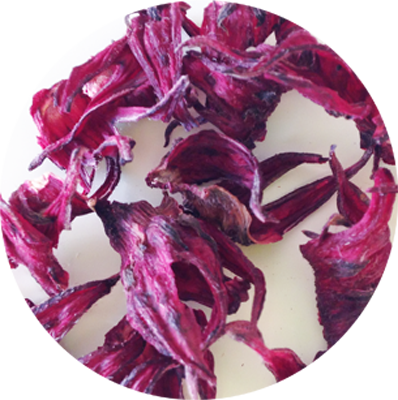
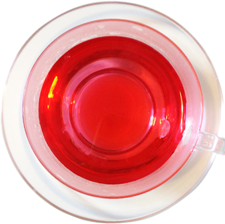

神に捧げる花
鮮やかな赤色とさわやかな酸味が特徴的です。
クエン酸、ハイビスカス酸、
ビタミンＣやミネラルが豊富です。
新陳代謝を高め、疲労回復やスポーツの後にも最適です。
生活習慣病の予防としてもおすすめです。
 | 和名 | 仏桑花（ブッソウゲ） |
| 学名 | Hibiscus sabdariffa |
| 科名 | アオイ科 |
| ティに使う部分 | がく |
|---|---|
| 作用 | 利尿、代謝促進、強壮、健胃 |
| 主要成分 | 有機酸、アントシアニン色素、粘液質、ペクチン、ミネラル |
| 注意点 | なし |
| 利用法 | 食品の色付け、化粧品として |
| 香り | 甘い香り |
|---|---|
| 味 | 甘み
 清涼感
酸味
清涼感
酸味
渋み
|
| ブレンドおすすめ | 美容と健康のためのブレンドティ ハイビスカス＋ローズヒップ＋ローズレッド |